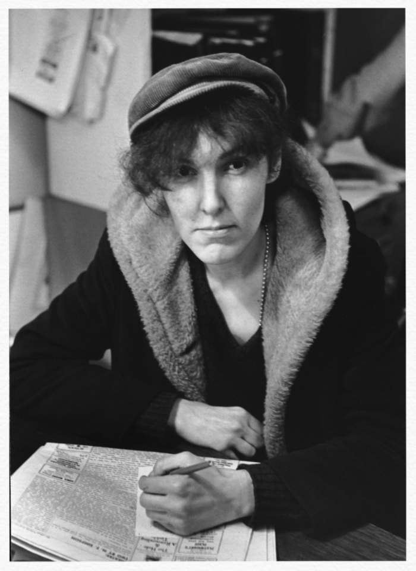
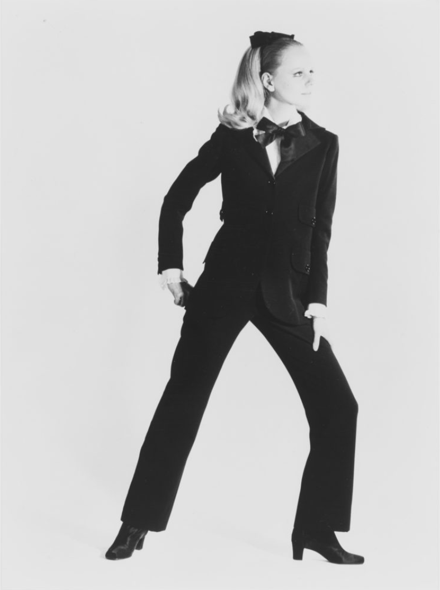
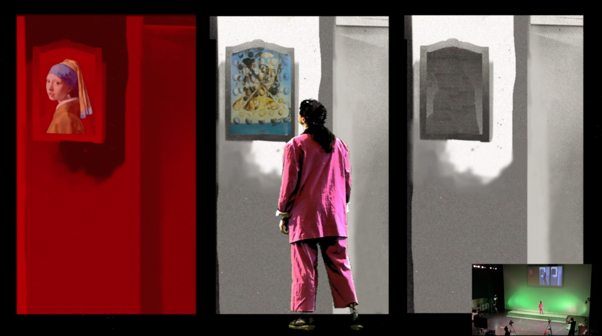
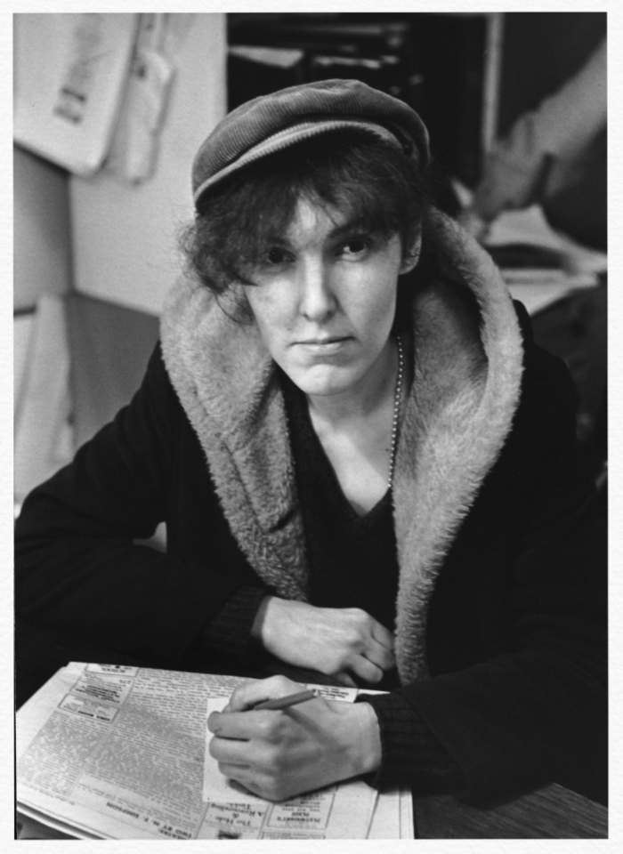
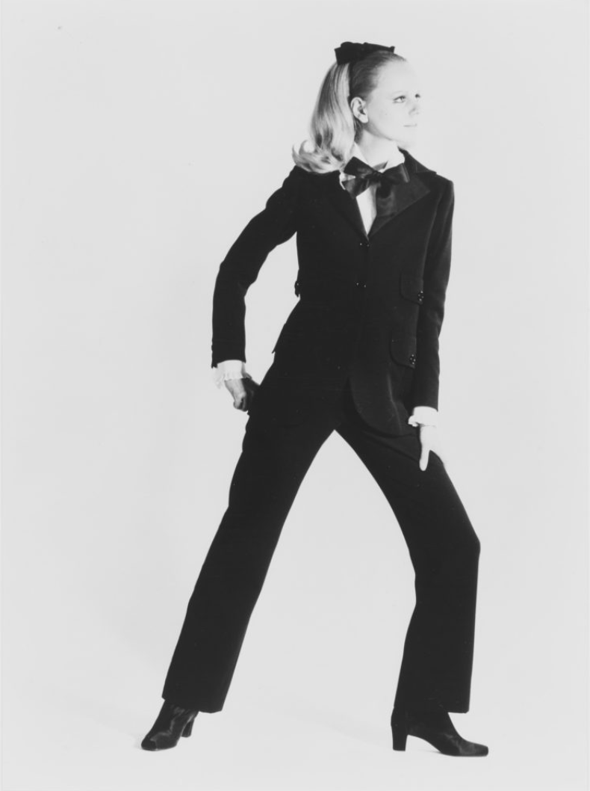
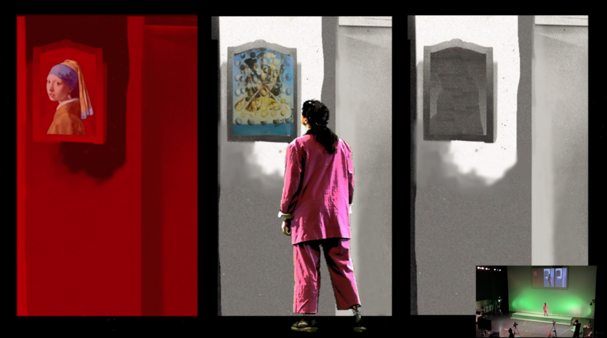

The Collective
The Collective project led by tutor Pete Brooks on the PDP course at Central Saint
Martins was my second experience of the project. I learned so much on the project in 2019
that I was delighted to take part again in 2020. The Collective is a great project for students
of Performance Design because it teaches the importance of collaboration in
the theatre industry. Every student that takes part in this project has different strengths
which are utilised to create a final performance.

For the collective in a time of COVID-19 was a class, split into small groups that would bubble for the five week project. I worked with fellow students Jida Akil and Inigo Townsend. We spent some time deliberating what we would make our 10-minute semi-animated graphic novel film about. We decided to tell the story of the shooting of Andy Warhol in 1968, from the point of view his radical-feminist attacker, Valarie Solanas. In the first mood board you can see we were looking at concepts having to do with the themes of egotism, feminism and dreams. Here we reference images of Andy Warhol and his entourage, woman’s protests in the 60’s in America, The Cabinet of Dr Caligari (Robert Wiene), Rocky Horror Picture Show (Jim Sharman) and war politics propaganda on women.

Valarie Costume Design
The Collective 2020 project was completely new and different however because of its adaption to the Coronavirus pandemic. All the same, using the software Isadora, we were able to produce a ten-minute performance completely under socially distancing rules. Due to Covid-19 restrictions we had to work in smaller groups; I teamed up with Jida Akil and Inigo Townsend. The brief for this project was to research the visual style of graphic novels and narrative structure of short stories, and to animate the visual spaces for our final performance. In our small group we came up with the idea to make our performance about the shooting of Andy Warhol from the point of view of his Feminist attacker Valerie Solanas.

Research into graphic novels and short stories led us to gain inspiration from the comic book Scott Pilgrim, and the films Taxi Driver, Vertigo, Terminator and The Shining. We were inspired by these films because of their colour pallete and the high level of action and detail and especially interested in learning from their shot types, such as low angles to establish power and extreme close-up to reveal emotion.

As we were unable to use props and build sets because the props and tools had to be quarantined, we decided to ‘go wild’ and incorporate objects in our animations that we would not normally have access to, such as large buildings and weapons. We painted comic book strips by hand of street scenes and hallways and scanned them into the computer.
The Costume Design: The 1960s in America was a major turning point for women, when a second wave of feminism really came into action. It was a time when they were finally being able to join the work force, legally allowed to divorce without permission of their partner, and the contraceptive pill was made widely available. Thinking about how fashion and culture are so deeply intertwined, we researched the androgenous fashion movement of the 60’s and specifically the Mods look with its subversive beauty standards, mask-like make-up and asymmetric bob. We decided to use elements of this look for Valerie, to dress the character in trousers as a symbol independence and maturity.
Yves Saint Lauren Tuxedo, 1966
Despite the constraints of working during the pandemic, I learnt a huge amount. Learning to use the Isadora software especially pushed me and there was a huge amount of painting involved and taking on several roles at once. Unlike the 2019 Collective where a huge amount of co-operation was needed across a bigger group, the 2020 project pushed me out of my comfort zones and meant that I had to direct as well as design. Another great outcome was that without a live audience, we could do as many takes as we wanted and, in the end, reach a greater online audience than we might have done with a live performance.

'Just Another Soup Can' by Jida Akil, Isis Hurley-Jones and Inigo Townsend:
For the collective in a time of COVID-19 was a class, split into small groups that would bubble for the five week project. I worked with fellow students Jida Akil and Inigo Townsend. We spent some time deliberating what we would make our 10-minute semi-animated graphic novel film about. We decided to tell the story of the shooting of Andy Warhol in 1968, from the point of view his radical-feminist attacker, Valarie Solanas. In the first mood board you can see we were looking at concepts having to do with the themes of egotism, feminism and dreams. Here we reference images of Andy Warhol and his entourage, woman’s protests in the 60’s in America, The Cabinet of Dr Caligari (Robert Wiene), Rocky Horror Picture Show (Jim Sharman) and war politics propaganda on women.
Valarie Costume Design
The Collective 2020 project was completely new and different however because of its adaption to the Coronavirus pandemic. All the same, using the software Isadora, we were able to produce a ten-minute performance completely under socially distancing rules. Due to Covid-19 restrictions we had to work in smaller groups; I teamed up with Jida Akil and Inigo Townsend. The brief for this project was to research the visual style of graphic novels and narrative structure of short stories, and to animate the visual spaces for our final performance. In our small group we came up with the idea to make our performance about the shooting of Andy Warhol from the point of view of his Feminist attacker Valerie Solanas.

Research into graphic novels and short stories led us to gain inspiration from the comic book Scott Pilgrim, and the films Taxi Driver, Vertigo, Terminator and The Shining. We were inspired by these films because of their colour pallete and the high level of action and detail and especially interested in learning from their shot types, such as low angles to establish power and extreme close-up to reveal emotion.
As we were unable to use props and build sets because the props and tools had to be quarantined, we decided to ‘go wild’ and incorporate objects in our animations that we would not normally have access to, such as large buildings and weapons. We painted comic book strips by hand of street scenes and hallways and scanned them into the computer.
The Costume Design: The 1960s in America was a major turning point for women, when a second wave of feminism really came into action. It was a time when they were finally being able to join the work force, legally allowed to divorce without permission of their partner, and the contraceptive pill was made widely available. Thinking about how fashion and culture are so deeply intertwined, we researched the androgenous fashion movement of the 60’s and specifically the Mods look with its subversive beauty standards, mask-like make-up and asymmetric bob. We decided to use elements of this look for Valerie, to dress the character in trousers as a symbol independence and maturity.
Yves Saint Lauren Tuxedo, 1966
Despite the constraints of working during the pandemic, I learnt a huge amount. Learning to use the Isadora software especially pushed me and there was a huge amount of painting involved and taking on several roles at once. Unlike the 2019 Collective where a huge amount of co-operation was needed across a bigger group, the 2020 project pushed me out of my comfort zones and meant that I had to direct as well as design. Another great outcome was that without a live audience, we could do as many takes as we wanted and, in the end, reach a greater online audience than we might have done with a live performance.

'Just Another Soup Can' by Jida Akil, Isis Hurley-Jones and Inigo Townsend: